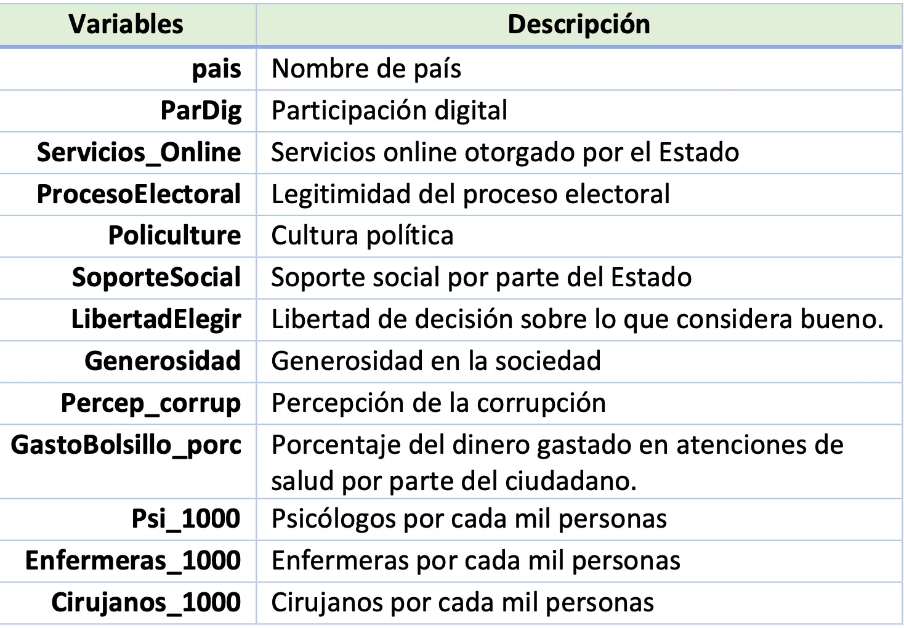

Sesión 1

FACULTAD DE CIENCIAS SOCIALES - PUCP
Curso: POL 304 - Estadística para el análisis político 2 | Semestre
2024 - 1
Jefas de Práctica: Karina Alcántara 👩🏫 y Lizette Crispín 👩🏫
Mundo Tidyverse

Tidyverse es un conjunto de de paquetes de R para ciencia de datos, nos ayuda a trabajar las bases de datos. Ha sido desarrollado por RStudio.
Es consistente : Todos los paquetes tienen una misma estructura
Concatenable: Siempre se pueden unir pequeñas partes para resolverlos
Funcional: Como casi todo R, promueve la programación
Para cada paso de tratamiento de datos existe un paquete, se puede pasar desde cargar/importar los datos, limpiarlos, transformarlos, visualizar, modelarlos y finalmente comunicarlos.
Para importar datos tenemos readr, haven y readxl. Para limpiar los datos usamos tidyr, para transformar los datos se usa dyplr, que lo veremos a continuación, para modelar se usa purr o broom, para visualizar se usa ggplot2. Finalmente, para comunicar se usa knitr para publicar los resultados por html, pdf, ppt. y rmarkdown es la estructura de knitr.
Algunos les gusta usarlo porque facilita el análisis y manipulación de datos y es más rápido, pero, por otro lado, tiene otra lógica en la programación. En vez de usar “,” para diferenciar entre comandos, usar %>%.
Instalando el paquete de tidyverse te incluye los 8 paquetes. Pero, eso sí, toma más tiempo de lo debido. Por eso, en esta ocasión, se ha descargado los que necesitaremos ahora
Sobre la data a analizar

Importar y preparar base de datos
## 'data.frame': 100 obs. of 13 variables:
## $ pais : chr "Albania" "Algeria" "Argentina" "Armenia" ...
## $ ParDig : num 0.644 0.119 0.627 0.525 0.983 ...
## $ Servicios_Online : num 0.5942 0.0652 0.7101 0.4275 0.9783 ...
## $ ProcesoElectoral : num 7 2.58 9.17 5.25 10 9.58 0.5 0.83 7.42 0.92 ...
## $ Policulture : num 5 5 6.88 1.88 8.75 6.88 3.75 4.38 4.38 5.63 ...
## $ SoporteSocial : num 0.848 1.16 1.432 1.055 1.548 ...
## $ LibertadElegir : num 0.383 0.086 0.471 0.283 0.557 0.532 0.351 0.536 0.527 0.235 ...
## $ Generosidad : num 0.178 0.073 0.066 0.095 0.332 0.244 0.035 0.255 0.166 0.094 ...
## $ Percep_corrup : num 0.027 0.114 0.05 0.064 0.29 0.226 0.182 0.11 0.143 0.142 ...
## $ GastoBolsillo_porc: num 58 30.9 15.8 80.6 18.9 18.9 78.9 28 71.9 35.8 ...
## $ Psi_1000 : num 1.2 1.8 4 2.9 3.6 5.1 3.4 0.9 0.5 4.1 ...
## $ Enfermeras_1000 : num 3.6 2.2 2.6 5.6 12.7 8.2 7 2.5 0.3 11.4 ...
## $ Cirujanos_1000 : num 11.6 12.1 50.1 86.7 45.1 ...Paquete “dplyr”
El paquete dplyr es el más útil en R para la manipulación de datos, una de las ventajas es que se pueda usar el pipe para combinar diferentes funciones en R. Para no tener que escribirlo, se genera mediante Ctlr + shift + M. En pocas palabras, reemplaza la “,” para concatenar(unir) varios comandos.
Filter: filtrar filas según un criterio
Filtra casos o filas que cumplen con el criterio.
Por ejemplo, aca estamos filtrando de la data a los países en los que más del 50% de personas realizan un gasto de bolsillo
Arrange: ordenar las filas
Ordenar las filas según una o más variables. Por default, si no se indica un criterio de orden, se ordenará de forma ascendente.
En este caso, además de realizar un filtro, se ha ordenado a la variable “GastoBolsillo_porc” de mayor a menor
Select: Seleccionando subconjunto de variables
Selecciona columnas o mejor dicho, variables de su conjunto de datos, según nombre. También se puede cambiar el nombre de la variable indicando los nombres en el siguiente orden “Nuevo_nombre = nombreendata”.
En este comando estamos especificando que queremos seleccionar de la data, las variables interés: país y GastoBolsillo_porc; además del filtro y orden que habíamos indicado previamente.
data %>%
filter(GastoBolsillo_porc > 50)%>%
arrange(desc(GastoBolsillo_porc))%>%
select(pais,GastoBolsillo_porc)
#Si quisiera cambiar el nombre de pais por Nombre_pais, debería usar select(Nombre_pais = pais, GastoBolsillo_porc)Si queremos quitar variable ponemos el signo de menos. Salen todas las variables menos Gasto de bolsillo y generosidad
Mutate: Para modificar la base de datos
Crea nuevas columnas conservando las variables existentes. En esta ocasión estamos creando una nueva variable “AltaPerCorru” que toma como punto de corte su tercer cuartil. Si el valor es mayor al 3er cuartil, la nueva variable será 1, sino será 0.
Primero determinemos el valor del punto de corte
Ahora, dentro del comando mutate, estamos usando la función ifelse. Esta función necesita de 4 argumentos: la variable en la que se basa, la condición, el valor si se cumple la condición, y el valor cuando no se cumple la condición
En este caso:
Variable = Percep_corrup
Condición = superar (>) 0.1422
Valor cuando se cumple la condición = 1
Valor cuando no se cumple la condición = 0
Reemplacemos:
Para que la nueva variable se guarde en la data, debemos guardar en un objeto (en este caso es la misma data)
Count: contar casos en base a una variable
Nos ayuda a contar las observaciones.
Vamos a contar los casos de los países según la percepción de corrupción (MayorPerCorru).
## MayorPerCorru n
## 1 0 75
## 2 1 25Como lo creamos a partir del tercer cuartil, se presupone que la relación entre los que no tienen una alta corrupción y los que sí es de 3 a 1.
Summarise: Crear resúmenes de datos
Resume cualquier de las variables de la data, según su tipo. Se le debe indicar una variable a analizar y el tipo de análisis que se le aplicará.
## Media
## 1 6.7825En este caso, queremos sacar el promedio de la puntuación de Proceso Electoral. Para eso usamos summarise. Mencionamos los datos de la base, luego la variable que se creará en base a ella, este nombre será el encabezado del valor que se genere en la tabla resumen. Luego, indicamos el cálculo que se quiere realizar, y la variable sobre la cual se realizará el mencionado cálculo. Si queremos que se omitan los valores perdidos (de haberlos) debemos indicar dentro del comando de la media “na.rm =T”.
Solo con variables numéricas (ojo)
Group_by: Agrupar datos
Agrupa diferentes observaciones de manera que el conjunto de datos original no cambie.
Podemos comparar cómo se califica a los procesos electorales según la percepción de corrupción en un país.
## # A tibble: 2 × 2
## MayorPerCorru Media
## <dbl> <dbl>
## 1 0 6.55
## 2 1 7.48Ejercicio en clase
- Crea una nueva variable (“Generosos”), que indique “Más generosos” si supera el 0.25 y “Menos generosos” si es menor o igual a 0.25. Agrupando según “Generosos”, identifica la media de cultura política (Policulture).
## # A tibble: 2 × 2
## Generosos media
## <chr> <dbl>
## 1 Menos generosos 5.56
## 2 Más generosos 7.38Repaso
Recordemos que con los modelos buscamos medir el efecto de un conjunto de variables independientes sobre una dependiente y también con el modelo creado predecir.
En este modelo es indispensable contar con una variable dependiente numérica continua.
Como se mencionó en la clase anterior, para obtener el mejor modelo con la recta que capte la mayoría de las coordenadas, se realizaba el método de los mínimos cuadrados (el cual ya es calculado por R).
Como no todo es perfecto, para poder realizar este método, se tienen que cumplir 5 supuestos, y así asegurar que el modelo que creemos sea estable y pueda predecir correctamente.
Regresión Lineal: Prediciendo el nivel de cultura política en un país
Recordando: RLSimple
Calcularemos un modelo para predecir el nivel de cultura política en un país según la tasa de cirujanos por mil habitantes
Variable dependiente: indicador de cultura política
Variable independiente: Cirujanos por cada mil personas
Seguimos nuestro flujograma para evaluar el modelo:
- Nos preguntamos si el modelo es válido
- Qué tanto explica el modelo
- Si la variable independiente aporta al modelo
- Identificamos los coeficientes
Recordando: RLMúltiple
¿Qué sucede si ahora agregamos más variables? 😼
Calculamos nuestro modelo, en este caso usaremos lo siguiente:
Variable dependiente: indicador de cultura política
Variables independientes: Cirujanos por cada mil personas (Cirujanos_1000) + Participación digital (ParDig) + Percepción de Corrupción Alta (MayorPerCorru)
modelo1 <- lm(data$Policulture~ data$Cirujanos_1000+
data$ParDig+
data$MayorPerCorru)
summary(modelo1)##
## Call:
## lm(formula = data$Policulture ~ data$Cirujanos_1000 + data$ParDig +
## data$MayorPerCorru)
##
## Residuals:
## Min 1Q Median 3Q Max
## -4.0899 -1.0188 -0.0692 1.0157 3.6525
##
## Coefficients:
## Estimate Std. Error t value Pr(>|t|)
## (Intercept) 4.262470 0.382055 11.157 < 2e-16 ***
## data$Cirujanos_1000 0.008425 0.004543 1.855 0.06673 .
## data$ParDig 1.859428 0.764792 2.431 0.01690 *
## data$MayorPerCorru 1.070411 0.362878 2.950 0.00399 **
## ---
## Signif. codes: 0 '***' 0.001 '**' 0.01 '*' 0.05 '.' 0.1 ' ' 1
##
## Residual standard error: 1.452 on 96 degrees of freedom
## Multiple R-squared: 0.3115, Adjusted R-squared: 0.29
## F-statistic: 14.48 on 3 and 96 DF, p-value: 7.435e-08Seguimos nuestro flujograma para evaluar el modelo:
- Nos preguntamos si el modelo es válido
- Qué tanto explica el modelo (R2 ajustado)
- Si las variables independientes aportan al modelo
- Identificamos los coeficientes
## (Intercept) data$Cirujanos_1000 data$ParDig data$MayorPerCorru
## 4.262469874 0.008424746 1.859427768 1.070411091- Construimos la ecuación 🤺